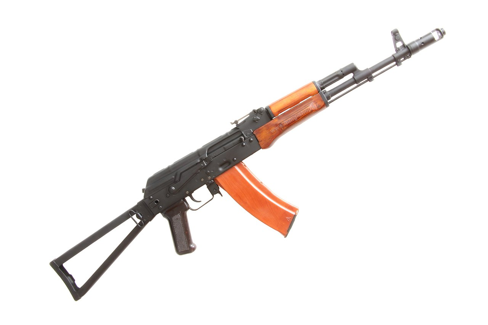

Укороченный вариант автомата АКС74, был разработан в конце 1970 - начале 1980-х годов для вооружения экипажей боевых машин, авиатехники, расчётов орудий, а также десантников. Он также используется в МВД и охранных структурах благодаря своим небольшим размерам. 
56-А-212М
вариант АК с откидным металлическим прикладом, предназначавшийся для воздушно-десантных войск. Первоначально выпускался со штампованной ствольной коробкой, а с 1951 года — фрезерованной из-за высокого процента брака при штамповке. Одной из главных проблем, вставших перед разработчиками во время развёртывания серийного производства АК, стала технология штамповки, по которой изготавливалась ствольная коробка.